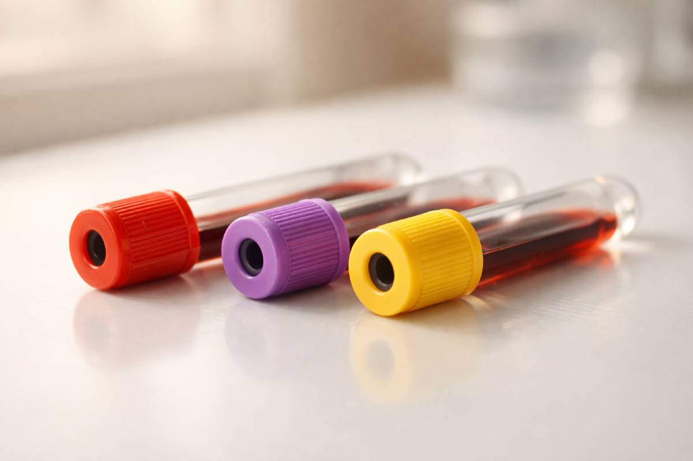

« Vos analyses sont revenues normales ? »
Ce que votre bilan ne dit pas dans le Covid long
Vous êtes épuisée depuis des mois. Votre médecin prescrit un bilan sanguin. Résultat : tout est dans les normes. Pourtant, vous ne vous sentez pas normale. Ce décalage entre les chiffres et le ressenti n'est pas dans votre tête — il est dans les limites de ce qu'un bilan standard peut détecter dans le Covid long.
⚡ L'essentiel en 4 points
Normes ≠ absence de problème
Des études publiées entre 2022 et 2025 suggèrent que certaines anomalies du Covid long restent dans les valeurs de référence absolues, tout en représentant des déséquilibres fonctionnels significatifs.
4 marqueurs Sécu à explorer
NFS, ferritine, D-dimères et bilan hépatique sont remboursés et prescrits en routine. Chacun raconte une partie de l'histoire — à condition de savoir lire entre les lignes.
Le pattern compte autant que la valeur
Dans la NFS notamment, une lymphopénie persistante peut rester dans les valeurs absolues normales mais signaler une dysrégulation immunitaire documentée dans le Covid long.
Ce que vous pouvez demander
Des formulations concrètes pour orienter la conversation avec votre professionnel de santé — sans dépasser le rôle de ce bilan de base.
📖 Termes de référence
- Numération formule sanguine (NFS) = Complete Blood Count (CBC)
- Lymphopénie = Lymphopenia — diminution du nombre de lymphocytes
- Rapport neutrophiles/lymphocytes (NLR) = Neutrophil-to-Lymphocyte Ratio
- Ferritine = Ferritin — protéine de stockage du fer
- D-dimères = D-dimer — fragment de dégradation de la fibrine (coagulation)
- ASAT = Aspartate aminotransférase (enzyme hépatique et musculaire)
- ALAT = Alanine aminotransférase (enzyme hépatique)
- PASC = Post-Acute Sequelae of SARS-CoV-2 — Covid long (terme scientifique)
- CRP = C-Reactive Protein — Protéine C Réactive, marqueur d'inflammation

1. NFS : quand les chiffres sont « normaux » mais le tableau ne l'est pas
La numération formule sanguine est l'examen de base prescrit dans presque toutes les situations. Dans le Covid long, elle peut sembler rassurante à première lecture — et pourtant, les données scientifiques disponibles invitent à regarder plus finement.
La lymphopénie persistante : un signal discret
Une diminution du nombre de lymphocytes (lymphopénie) est documentée dans le Covid long par plusieurs études.[1] Ce qui rend ce signal difficile à interpréter : la valeur absolue peut rester dans les bornes de référence du laboratoire, tout en étant basse par rapport à votre propre niveau habituel. Sans bilan antérieur de référence, ce glissement passe inaperçu.
Le mécanisme proposé est multifactoriel : épuisement des lymphocytes T par exposition prolongée à des antigènes viraux persistants, infiltration lymphocytaire dans les tissus, et possible effet de la tempête cytokinique initiale sur la survie des cellules immunitaires.[1]
Figure 1. Les lymphocytes peuvent rester au-dessus de la borne basse du laboratoire tout en étant significativement inférieurs au niveau pré-infectieux de la personne.
Le ratio neutrophiles/lymphocytes (NLR) : un index à calculer, pas encore validé dans le Covid long
Le rapport entre neutrophiles et lymphocytes est calculable à partir de toute NFS standard — sans examen supplémentaire. Ce ratio est bien documenté comme marqueur de sévérité en phase aiguë, mais son utilité spécifique dans le Covid long n'a pas encore été clairement quantifiée dans la littérature disponible. L'hypothèse d'un NLR persistant élevé, reflet d'une neutrophilie relative associée à la lymphopénie documentée, est biologiquement plausible — mais reste à confirmer par des études dédiées.
🔬 L'œil du Docteur en pharmacie
En l'absence de données de référence spécifiques au Covid long, le NLR doit être interprété avec prudence. Ce n'est pas un examen supplémentaire à prescrire : le calcul se fait à partir des données déjà présentes sur votre feuille de résultats. S'il est élevé de façon persistante, signalez-le à votre médecin pour qu'il l'interprète dans votre contexte clinique global.
2. Ferritine : le marqueur à double tranchant
La ferritine est une protéine de stockage du fer. Elle est souvent prescrite "pour vérifier les réserves en fer", mais dans le Covid long, son interprétation est nettement plus complexe.
Ferritine haute dans les normes : signe possible d'inflammation de bas grade
La ferritine est aussi un réactif de l'inflammation aiguë : son taux augmente sous l'effet de cytokines pro-inflammatoires, notamment l'IL-6.[1] Des données suggèrent qu'une hyperferritinémie persistante a été observée chez 38 % des personnes à 60 jours après l'infection,[1] associée à des perturbations du métabolisme du fer. Cependant, une méta-analyse de 23 études (Yong et al., 2023) n'a pas retrouvé de différence significative sur la ferritine seule entre les personnes avec et sans Covid long.[11] Ce signal est donc présent dans certaines cohortes mais pas systématique — ce qui renforce l'intérêt d'une interprétation contextuelle plutôt que d'une valeur seuil absolue.
Une ferritine à 180 µg/L est dans la norme des laboratoires (borne haute typique : 200 µg/L chez la femme), mais peut correspondre à un signal inflammatoire chronique de bas grade chez certaines personnes — à contextualiser avec le reste du bilan.
Ferritine basse dans les normes : carence fonctionnelle masquée
À l'autre extrême, une ferritine à 12 µg/L est "dans les normes" du laboratoire (borne basse : 10–13 µg/L selon les établissements), mais insuffisante pour un fonctionnement cellulaire optimal — en particulier pour la synthèse de neurotransmetteurs et la production d'énergie mitochondriale. Le Covid long étant associé à un dérèglement du métabolisme du fer,[1] cette situation mérite une attention particulière.
Figure 2. Dans le Covid long, les deux extrémités de la zone "normale" méritent une interprétation contextuelle, pas seulement une validation automatique.
💡 À noter : La ferritine basse est très fréquente chez les femmes en âge de procréer (pertes menstruelles, alimentation). Dans le Covid long, elle peut aggraver la fatigue et les symptômes neurocognitifs — même en l'absence d'anémie franche au bilan.
3. D-dimères : la coagulation silencieuse
Les D-dimères sont des fragments produits lors de la dissolution des caillots sanguins. En dehors de la phase aiguë, ils ne sont pas systématiquement prescrits — et pourtant, leur persistance dans le Covid long est documentée.
Ce que disent les données disponibles
Des données issues de plusieurs études de suivi suggèrent qu'environ 15 % des personnes conservent des D-dimères élevés (≥ 500 ng/mL) jusqu'à 8 mois après l'infection.[1] La seule méta-analyse disponible à ce jour sur ce marqueur spécifique (Yong et al., 2023, 23 études) confirme des D-dimères significativement plus élevés dans le Covid long que dans les groupes contrôles, avec une taille d'effet modérée (différence moyenne standardisée SMD = 0,27 ; IC95% : 0,09–0,46).[11] Ce résultat est robuste — il reste significatif après analyse de sensibilité.
Le mécanisme proposé implique une thromboinflammation persistante, possiblement entretenue par des protéines virales (notamment la protéine Spike) détectables dans la circulation bien après la résolution de l'infection aiguë.[2] Ces phénomènes de microcoagulation restent actifs sans nécessairement dépasser les seuils cliniques d'embolie pulmonaire ou de thrombose.
Figure 3. La thromboinflammation persistante peut produire des D-dimères élevés sans tableau clinique de thrombose franche.
Pourquoi ce marqueur n'est pas toujours prescrit
En dehors d'une suspicion de thrombose ou d'embolie pulmonaire, les D-dimères ne font pas partie du bilan de suivi standard proposé aux personnes souffrant de Covid long. Pourtant, ils sont remboursés par la Sécurité sociale lorsqu'ils sont prescrits. Si vous avez des symptômes évocateurs (essoufflement, oppression thoracique, fatigue profonde inexpliquée), c'est un élément à mentionner à votre professionnel de santé.
📘 Pour aller plus loin : le Guide bilan avancé
Microthrombus, fibrine amyloïde, D-dimères fonctionnels, génotypage de la coagulation, méthylation SAMe/SAH… Ces marqueurs de deuxième intention — non remboursés en routine mais scientifiquement documentés — sont détaillés dans notre guide premium.
Laissez votre adresse e-mail pour être prévenu dès sa sortie :
4. Bilan hépatique : l'organe oublié
Le foie est rarement au centre des préoccupations dans le Covid long. Pourtant, il est au carrefour du métabolisme énergétique, de la détoxification et de la réponse inflammatoire — trois axes perturbés dans cette condition.
ASAT, ALAT : les transaminases sous surveillance
Des études récentes documentent une atteinte hépatique post-Covid allant des élévations asymptomatiques des transaminases jusqu'à des tableaux de cholangiopathie (atteinte des voies biliaires) dans les cas les plus sévères.[4] La physiopathologie est multifactorielle : action directe du virus sur les cellules hépatiques (les hépatocytes expriment des récepteurs ACE2), réponse inflammatoire systémique, et possible hépatotoxicité médicamenteuse liée aux traitements reçus pendant la phase aiguë.[5]
Le suivi dans le temps révèle une persistance notable : dans une cohorte de 118 patients suivis jusqu'à un an après la sortie, 28,8 % présentaient encore au moins un paramètre hépatique anormal à 1 an — principalement GGT et bilirubine.[12] Une revue narrative de 2025 confirme que ces manifestations peuvent progresser des mois après la résolution de l'infection, avec un risque accru chez les personnes ayant des facteurs préexistants (syndrome métabolique, obésité, hépatite virale).[5]
Fatigue et foie : le lien énergétique
Une cytolyse hépatique légère — même peu symptomatique — peut contribuer à la fatigue en perturbant la production de protéines plasmatiques, le métabolisme des acides aminés et la régulation glycémique. Ce mécanisme est souvent sous-estimé dans le tableau clinique du Covid long.
🔬 L'œil du Docteur en pharmacie
Un bilan hépatique complet inclut ASAT, ALAT, GGT, phosphatases alcalines et bilirubine. En consultation, le médecin peut se contenter de l'ALAT seule. Si vous ressentez une fatigue profonde, une sensation de lourdeur digestive ou un inconfort de l'hypocondre droit, il est pertinent de demander un bilan hépatique complet — remboursé et sans risque.
5. Cinq marqueurs du bilan HAS souvent oubliés
La HAS (janvier 2023) recommande un bilan de première intention plus complet que ce qui est habituellement prescrit. Ces paramètres sont remboursés, accessibles en médecine de ville, et pourtant rarement interprétés dans leur intégralité.
Ionogramme sanguin : l'hypokaliémie silencieuse
L'ionogramme — sodium, potassium, chlorures, bicarbonates — est l'un des examens les plus prescrits et les moins interprétés dans ce contexte. L'hypokaliémie (déficit en potassium) est une perturbation documentée dans le Covid-19 et ses suites, avec des mécanismes multiples : utilisation du récepteur ACE2 par le virus dans les cellules tubulaires rénales, perturbations gastro-intestinales, et — point crucial — une carence en magnésium qui rend l'hypokaliémie réfractaire à la correction.[7]
Le lien magnésium-potassium est pharmacologiquement fondamental : sans corriger le magnésium en parallèle, la supplémentation en potassium reste inefficace. Une hypokaliémie légère, dans les valeurs basses de la normale, peut contribuer à la fatigue musculaire, aux palpitations et à la faiblesse persistante du Covid long.
🔬 L'œil du Docteur en pharmacie
L'ionogramme ne mesure pas le magnésium — ce sont deux examens distincts. La magnésémie standard n'est pas totalement fiable (le magnésium est majoritairement intracellulaire). En pratique, si l'ionogramme révèle une hypokaliémie et/ou des symptômes évocateurs (crampes, fatigue musculaire, palpitations), l'association potassium-magnésium est à discuter avec votre médecin avant toute supplémentation isolée en potassium.
Créatininémie et clairance (eGFR) : le rein post-Covid
Le rein est un organe cible du SARS-CoV-2 au même titre que le foie — les cellules tubulaires rénales expriment fortement les récepteurs ACE2. Des données issues d'une cohorte canadienne de 2 212 personnes suivies en clinique post-Covid documentent un déclin significatif du débit de filtration glomérulaire estimé (eGFR) dans l'année suivant l'infection, de l'ordre de 3 % en moyenne — avec des baisses plus marquées chez les personnes hospitalisées ou diabétiques.[8] Plus de 40 % des personnes de cette cohorte étaient à risque de maladie rénale chronique.
Une étude publiée dans Biomedicines (2024) confirme des niveaux de créatinine sérique et d'urée significativement plus élevés dans le groupe Covid long par rapport aux témoins à 6 mois post-infection, avec un eGFR abaissé.[9] Ces anomalies restent souvent dans les valeurs de référence absolues — mais représentent un glissement fonctionnel mesurable.
💡 La créatininémie seule ne suffit pas : c'est la clairance estimée (eGFR), calculée à partir de la créatinine, de l'âge et du sexe, qui reflète réellement la fonction rénale. Elle figure sur tout compte rendu de biologie standard — vérifiez qu'elle est bien calculée et interprétée, pas seulement la créatinine brute.
🔬 L'œil du Docteur en pharmacie — créatine ≠ créatinine
Si vous prenez de la créatine (complément alimentaire fréquent dans le sport et la récupération musculaire), sachez qu'elle est partiellement convertie en créatinine lors de sa dégradation — ce qui peut faire monter la créatininémie sans aucune atteinte rénale réelle. Un essai contrôlé randomisé sur 2 ans a montré que malgré cette élévation de la créatinine, la cystatine C — marqueur filtré uniquement par le glomérule, non influencé par la masse musculaire ni la créatine — restait parfaitement normale, confirmant une fonction rénale préservée.[10] Si votre créatinine est légèrement élevée et que vous prenez de la créatine, signalez-le à votre médecin : il pourra demander une cystatine C pour trancher.
Cortisolémie à 8h : le signal hormonal du Covid long
Une étude publiée dans Nature en 2023, portant sur 275 personnes, a identifié un taux de cortisol plasmatique circulant abaissé parmi les caractéristiques biologiques les plus fortement associées au Covid long dans des modèles de machine learning.[6] La HAS 2023 recommande la mesure de la cortisolémie à 8h dans le bilan de la fatigue persistante — comme signal d'orientation, pas comme marqueur diagnostique.
Une étude plus récente (Camici et al., 2026, n=96) apporte une précision importante : le cortisol plasmatique n'était pas significativement différent entre les personnes avec et sans Covid long, mais le profil du cortisol salivaire sur 24h était altéré — pic matinal abaissé, élévation nocturne — avec un taux d'ACTH plus élevé chez les personnes avec Covid long. Ce découplage suggère une dysrégulation de l'axe hypothalamo-hypophyso-surrénalien plutôt qu'une insuffisance surrénalienne franche.
⚠️ Point de vigilance : la cortisolémie plasmatique à 8h reste l'examen accessible en routine (remboursé). Une valeur basse-normale est un signal à contextualiser avec votre médecin — sans sur-interprétation ni sous-estimation. Le cortisol salivaire sur 24h, plus informatif, n'est pas encore dans le bilan HAS standard.
TSH et anticorps anti-TPO : la thyroïde post-Covid
La TSH (hormone thyréostimulante) est incluse dans le bilan HAS et permet d'éliminer une dysthyroïdie franche. Mais dans le Covid long, des thyroïdites auto-immunes (type Hashimoto) peuvent se manifester avec une TSH encore normale en phase précoce. Lorsque la fatigue est prédominante et que la TSH est dans la zone basse de la normale, les anticorps anti-TPO (anti-thyroperoxydase) peuvent apporter un complément d'information utile — prescriptibles et remboursables sur orientation médicale.
CRP standard vs CRP ultrasensible : deux lectures différentes
La CRP standard (seuil de détection habituel : 5–10 mg/L) ne capte pas l'inflammaging — l'inflammation chronique de bas grade caractéristique du Covid long. La CRP ultrasensible (CRPus), avec un seuil de détection autour de 0,5 mg/L, peut mettre en évidence une inflammation persistante invisible sur le bilan standard. Elle n'est pas systématiquement incluse dans les bilans de ville mais peut être demandée par le médecin dans un contexte clinique justifié.
🔬 L'œil du Docteur en pharmacie
Un quatrième marqueur mérite mention : l'homocystéine plasmatique. Non incluse dans le bilan HAS standard, mais prescriptible et remboursable, elle reflète l'efficacité du cycle méthionine-SAMe — une voie métabolique fréquemment perturbée en contexte post-infectieux, notamment chez les personnes prenant du paracétamol de façon prolongée. Sous-utilisée, souvent méconnue des médecins généralistes, elle constitue pourtant un signal pertinent dans le Covid long avec composante neurocognitive ou inflammatoire persistante.
6. Ce que vous pouvez demander à votre professionnel de santé
Ce n'est pas à vous de prescrire votre bilan. Mais vous avez le droit de comprendre vos résultats et d'orienter la conversation. Voici quelques formulations utiles :
| Marqueur | Ce que vous pouvez dire | Ce qui est remboursé |
|---|---|---|
| NFS complète | « Pouvez-vous regarder le ratio neutrophiles/lymphocytes, et non seulement les valeurs absolues ? » | ✅ Oui |
| Ionogramme complet | « Mon ionogramme montre-t-il une hypokaliémie, même légère ? Si oui, le magnésium a-t-il été vérifié en parallèle ? » | ✅ Oui |
| Créatinine + eGFR | « Est-ce que la clairance rénale (eGFR) a été calculée, pas seulement la créatinine brute ? » | ✅ Oui |
| Ferritine | « J'aimerais comprendre si ma ferritine reflète une réserve en fer ou une inflammation — les deux interprétations sont possibles selon la valeur. » | ✅ Oui |
| D-dimères | « Étant donné mes symptômes (fatigue, essoufflement), peut-on vérifier les D-dimères pour éliminer une composante inflammatoire de la coagulation ? » | ✅ Oui, si indiqué |
| Bilan hépatique complet | « Peut-on faire un bilan hépatique complet (ASAT, ALAT, GGT, phosphatases alcalines, bilirubine) ? Je ressens une fatigue profonde et j'ai eu un Covid. » | ✅ Oui |
| CRP ultrasensible | « Une CRP ultrasensible serait-elle pertinente pour explorer une inflammation de bas grade — différente de la CRP standard ? » | ⚠️ Selon contexte |
| Cortisolémie à 8h | « La HAS recommande la cortisolémie à 8h dans le bilan de fatigue persistante. Peut-on l'inclure ? » | ✅ Oui (HAS 2023) |
| TSH + anti-TPO | « Ma TSH est normale mais ma fatigue est majeure. Les anticorps anti-TPO pourraient-ils apporter une information supplémentaire ? » | ⚠️ Selon contexte |
| Homocystéine | « L'homocystéine plasmatique est-elle pertinente dans mon cas ? Je lis qu'elle reflète le cycle méthionine, souvent perturbé post-infection. » | ⚠️ Selon contexte |
Ces formulations n'ont pas vocation à orienter la décision médicale à votre place — elles permettent d'ouvrir un dialogue éclairé avec votre professionnel de santé.
🧩 Ce que l'on sait — et ce que l'on ne sait pas encore
Ce qui est documenté : des anomalies biologiques persistantes ont été observées dans de multiples cohortes de suivi post-Covid, portant sur la NFS (lymphopénie ~12 % à 2 mois), les D-dimères (SMD = 0,27 en méta-analyse de 23 études, prévalence ≈15 % à 8 mois), le bilan hépatique (28,8 % d'anomalie à 1 an dans une cohorte de suivi) et le cortisol (profil salivaire altéré, cortisol plasmatique abaissé dans une cohorte de 275 personnes). Ces données sont issues de revues, méta-analyses et études publiées entre 2022 et 2025 dans des journaux de référence.
Ce qui reste incertain : la ferritine seule ne montre pas de différence significative en méta-analyse (Yong 2023), ce qui tempère son usage comme marqueur isolé. Le NLR n'a pas encore été quantifié spécifiquement dans le Covid long. Le cortisol plasmatique à 8h donne des résultats variables selon les études — c'est le profil salivaire sur 24h qui semble plus informatif. Les seuils fonctionnels distincts des normes de laboratoire ne font pas encore consensus. Aucun biomarqueur unique ne permet à ce stade de confirmer ou d'exclure le Covid long.
Questions fréquentes
Est-ce que le Covid long peut exister même si toutes mes analyses sont normales ?
Oui. Des études publiées entre 2022 et 2025 montrent que certaines anomalies biologiques du Covid long restent dans les valeurs de référence absolues des laboratoires, tout en représentant des déséquilibres fonctionnels significatifs. Un bilan standard ne suffit pas à explorer l'ensemble des mécanismes impliqués.
Quels examens sont pris en charge par la Sécurité sociale dans le Covid long ?
La NFS, la CRP, la ferritine, le bilan hépatique (ASAT, ALAT, GGT, phosphatases alcalines) et les D-dimères sont des examens remboursés lorsqu'ils sont prescrits par un médecin dans un contexte clinique justifié. Ce sont ces marqueurs qui sont détaillés dans cet article.
Pourquoi la ferritine peut-elle être « normale » et pourtant problématique ?
Les normes de laboratoire (habituellement 10–200 µg/L chez la femme adulte) ont été établies sur des populations généralistes, pas sur des personnes en phase de Covid long. Une ferritine à 15 µg/L est dans la norme mais peut témoigner d'une carence fonctionnelle en fer. À l'inverse, une ferritine à 190 µg/L dans la norme haute peut refléter une inflammation chronique de bas grade persistante — et non un excès de réserves en fer.
Les D-dimères sont-ils dangereux à mesurer ?
Non. La mesure des D-dimères est une simple prise de sang, sans risque. C'est son interprétation qui doit être contextuelle : un résultat élevé ne signifie pas nécessairement une thrombose. Votre médecin est le seul à pouvoir interpréter ce résultat dans le cadre de votre tableau clinique.
Suivez vos symptômes dans le temps
Boussole vous permet de noter chaque jour votre énergie, votre sommeil, votre confort physique et votre clarté mentale. En 30 jours, vous avez une vision objective de vos fluctuations — utile à partager avec votre professionnel de santé.
Essayer Boussole gratuitement →Sources scientifiques
- Lechuga GC, Morel CM, De-Simone SG. Hematological alterations associated with long COVID-19. Front Physiol. 2023;14:1203472. Lechuga et al., 2023 — PubMed PMID 37565145
- Iba T, Connors JM, Levy JH. What Role Does Microthrombosis Play in Long COVID? Semin Thromb Hemost. 2023;50(4):527-536. Iba et al., 2023 — PubMed PMID 37748518
- Ignatyev O, Panyita O, Prutiian T, Kostromin P. Haematological changes in sailors who had COVID-19. Int Marit Health. 2022;73(4):178-180. Ignatyev et al., 2022 — PubMed PMID 36583404
- Caballero-Alvarado J, Zavaleta Corvera C, et al. Post-COVID cholangiopathy: A narrative review. Gastroenterol Hepatol. 2022;46(6):474-482. Caballero-Alvarado et al., 2022 — PubMed PMID 36174796
- Florea CE, Bălaș-Maftei B, et al. Multiorgan Involvement and Particularly Liver Injury in Long COVID: A Narrative Review. Life (Basel). 2025;15(8):1314. Florea et al., 2025 — PubMed PMID 40868961
- Klein J, Wood J, Jaycox JR, Iwasaki A et al. Distinguishing features of long COVID identified through immune profiling. Nature. 2023;623(7985):139-148. Klein et al., 2023 — PubMed PMID 37748514
- Noori M, Nejadghaderi SA, et al. A Review on the Possible Pathophysiology of Potassium Abnormalities in COVID-19. Iran J Kidney Dis. 2021;15(6):397-407. Noori et al., 2021 — PubMed PMID 34930851
- Atiquzzaman M, Thompson JR, et al. Long-term effect of COVID-19 infection on kidney function among COVID-19 patients followed in post-COVID-19 recovery clinics. Nephrol Dial Transplant. 2023;38(12):2816-2825. Atiquzzaman et al., 2023 — PubMed PMID 37349962
- Boruga M, Septimiu-Radu S, et al. Kidney Function Tests and Continuous eGFR Decrease at Six Months after SARS-CoV-2 Infection in Patients Clinically Diagnosed with Post-COVID Syndrome. Biomedicines. 2024;12(5):950. Boruga et al., 2024 — PubMed PMID 38790912
- Bender A, Samtleben W, Elstner M, Klopstock T. Long-term creatine supplementation is safe in aged patients with Parkinson disease. Nutr Res. 2008;28(3):172-178. Bender et al., 2008 — PubMed PMID 19083405
- Yong SJ, Halim A, Halim M, et al. Inflammatory and vascular biomarkers in post-COVID-19 syndrome: A systematic review and meta-analysis of over 20 biomarkers. Rev Med Virol. 2023;33(2):e2424. Yong et al., 2023 — PubMed PMID 36708022
- Zhu X, Wang J, Du J, et al. Changes in Serum Liver Function for Patients with COVID-19: A 1-Year Follow-Up Study. Infect Drug Resist. 2022;15:1857-1870. Zhu et al., 2022 — PubMed PMID 35450115